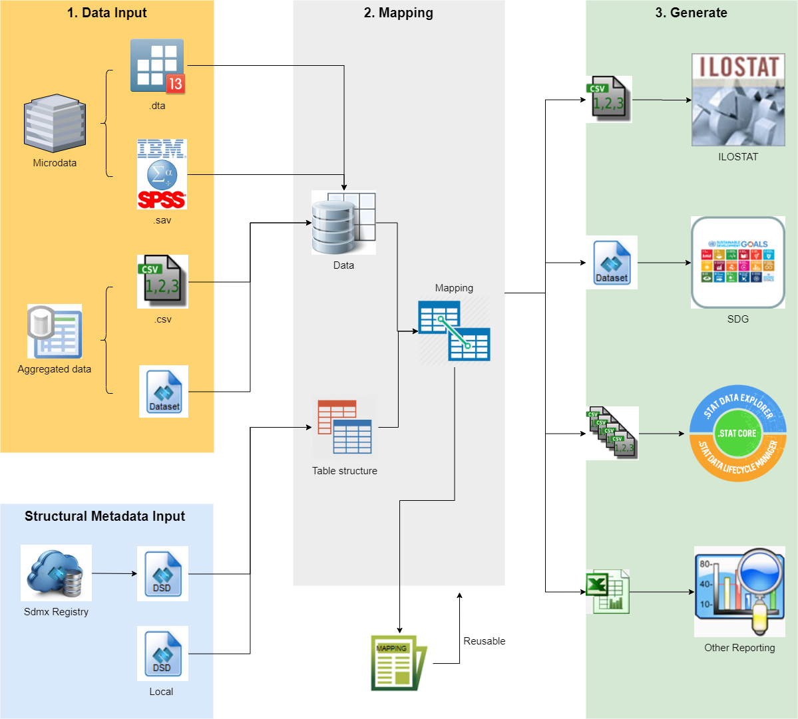

Quick Start
Once SMART is successfully installed, you are all set and ready to work. The following brief instructions should provide you a quick start.
Initially, the objective of this tool is to allow a user to generate the tables that are requested by the ILO in the Yearly data reporting as well as to produce all the csv files ready to be uploaded in ILOSTAT or in LMIS.Stat. It is a standalone product built using a GUI in .NET on top of R statistical processor. There are 3 steps in order to perform an analysis, as shown in the concept map below:
- Data and DSD inputs
- SMART has two main inputs: a dataset with the source information and an XML file/message containing SDMX-ML DSD with one or multiple data structures to define the cross tables to be generated. This DSD can be a file or a message got from an SDMX RESTful query on an SDMX registry.
- Mapping
- The "mapping" process links the concepts in the DSD with the variable in the input data file. "Primary Measure" and "Dimensions" must be linked to the corresponding variables in the input dataset.
-
For the categorical variables in the dataset which have different codes as the classification items in the DSDs, a mapping for each category must be done. This will allow, for example, to process a dataset which codes sex as Male=1 and Women=2, while the DSD uses "M" and "F". The "mapping" consists in assigning 1 and 2 to M and F, respectively. Some classification items from the DSD can be left unmapped meaning that they will not be included in the tabulation. In the same way, some categories in the dataset could be not mapped and this records won’t be counted in the tables that include such classification.
-
The final step before producing the reporting files is the assignment of the descriptive metadata (Notes). The attributes in the DSD will be presented to the user with a list of valid options to select. If the DSD includes one or more free text attributes for open text notes, they can be added at this point.
-
All the mappings (variable definitions, transcoding information and notes’ values) can and should be saved for further re-use.
- Generate
- When all the data has been entered and the variables in the dataset are properly mapped to the concepts in the DSD (
- .csv for ILOSTAT
- .csv for .Stat
- SDMX
- Excel
Measures,DimensionsandAttributes), the user is requested to select the format for the output report. The available options are:
The cross tables defined by the DSD will be produced by clicking in the “PROCESS” button. The completion status and results for each table will be showed in a report for visual verification.
- In processing the input data, SMART can count cases, summarize, compute means and filter records based on complex conditions. However, it is not advisable to attempt to follow complex questionnaire sequences in the calculation of the indicators, but rather pre-process the micro data to compute and add derived variables using more powerful statistical packages like Stata, SPSS, SAS or R. These variables can then be used in the production of the output cross tabulations.
- The XML containing the DSD defines the structure of the table(s) and should include all the code lists necessary for dimensions and attributes (metadata).


Click REFERENCE to learn more about the mapping rules and the functionality of buttons.
Click EXAMPLES to run with some concrete examples.